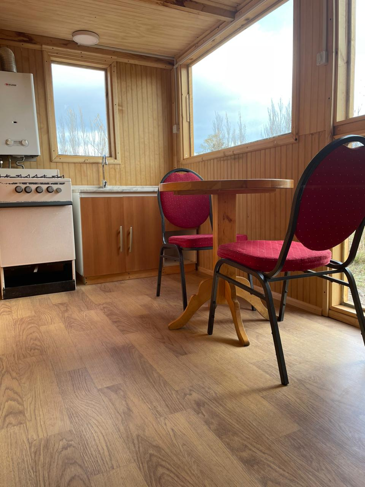
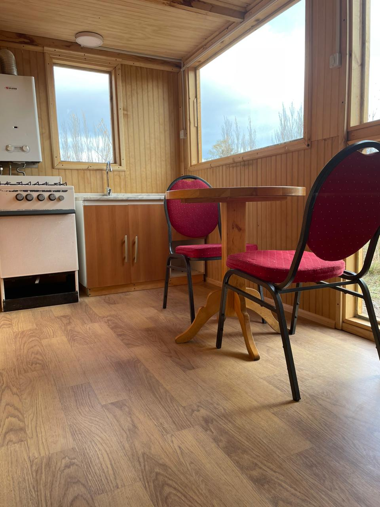
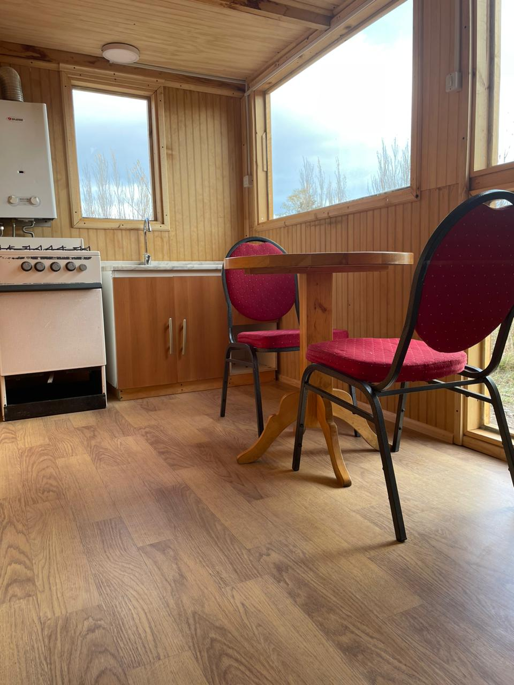

Simplicidad y Comodidad en Cada Rincón
Ven a disfrutar de la belleza de la patagonia alojandote en una hermosa tiny hause hubicada en el sector rural de Chile Chico

Ven a disfrutar de la belleza de la patagonia alojandote en una hermosa tiny hause hubicada en el sector rural de Chile Chico